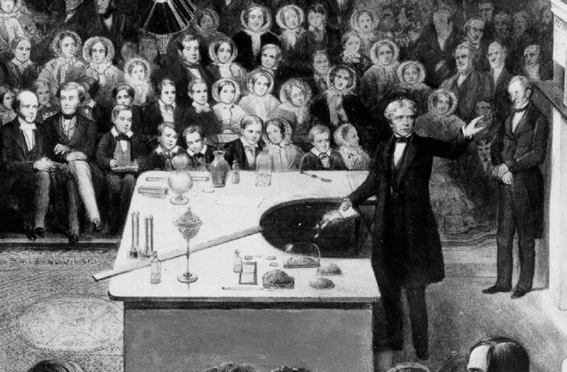

محاضرات عيد الميلاد هي سلسلة من المحاضرات حول موضوع واحد، والتي عقدت في المؤسسة الملكية في لندن كل عام منذ عام 1825، ما عدا الأعوام 1939-1942 بسبب الحرب العالمية الثانية. تقدم المحاضرات مواضيع علمية للجمهور العام، بما في ذلك الشباب، بطريقة مفيدة ومسلية.
بدأ مايكل فاراداي أول سلسلة محاضرات عيد الميلاد في عام 1825. وجاء ذلك في وقت كان التعليم المنظم للشباب نادرا. قدم فاراداي ما مجموعه تسعة عشر سلسلة في كل شيء.

تم بث محاضرات عيد الميلاد لأول مرة في عام 1936 على قناة تلفزيون بي بي سي. في عام 2000 تم بث إحدى المحاضرات مباشرة للمرة الأولى. بعد انتهاء عقد القناة الرابعة لبث المحاضرات، كانت هناك مخاوف من أنه يمكن ببساطة إسقاطها من جدولة لأن القناة كانت تتفاوض مع المؤسسة الملكية حول التغييرات المحتملة في الشكل، في حين أعلنت هيئة الإذاعة البريطانية أن "بي بي سي لن تظهر المحاضرات مرة أخرى، لأنه يشعر أن البيئة الإذاعية قد انتقلت على مدى السنوات الأربع الماضية ". [8] وافقت القناة الخامسة في وقت لاحق على إظهار المحاضرات من 2005-2008، وهو الإعلان الذي كان يلتقي مع الخداع من الأكاديميين. [9] وقد تم بث المحاضرات على موقع "More4" في عام 2009. وفي عام 2010، عادت المحاضرات إلى هيئة الإذاعة البريطانية بعد غياب دام عشر سنوات من المذيع، وقد عرضت على بي بي سي أربعة كل عام منذ ذلك الحين.